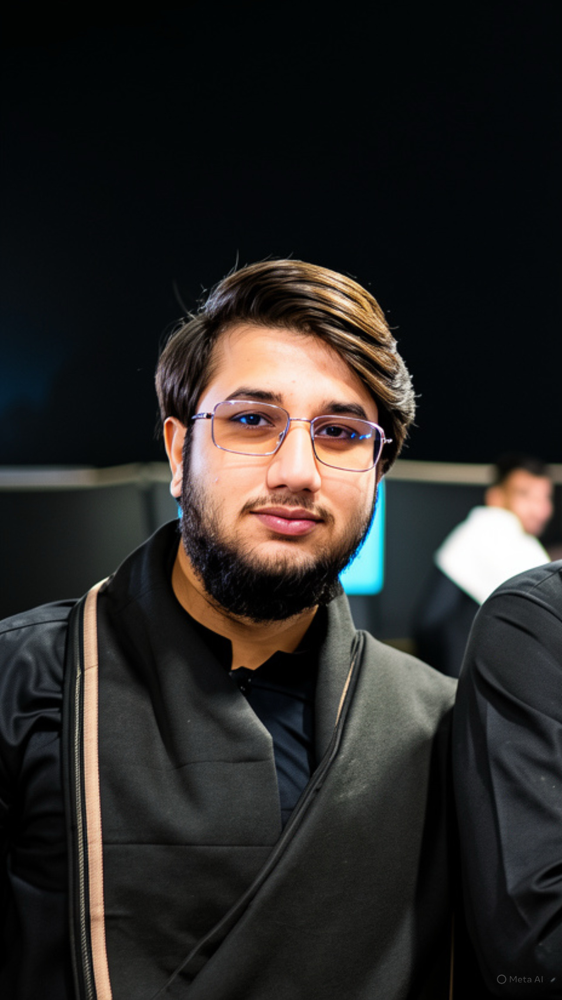

People Behind SEAR
A Focused Team Building Deployable Maritime Security Systems.
SEAR is led by founders with complementary strengths in robotics architecture, embedded control, autonomy, and SONAR-led sensing.
SEAR is led by founders with complementary strengths in robotics architecture, embedded control, autonomy, and SONAR-led sensing.

Leads system architecture, integration strategy, and mission-level product direction.
Leads hardware architecture and embedded controls for reliable field deployment.
Drives navigation autonomy, mission behavior logic, and route-planning reliability.

Leads sensor systems, SONAR integration, and signal-level threat-detection tuning.